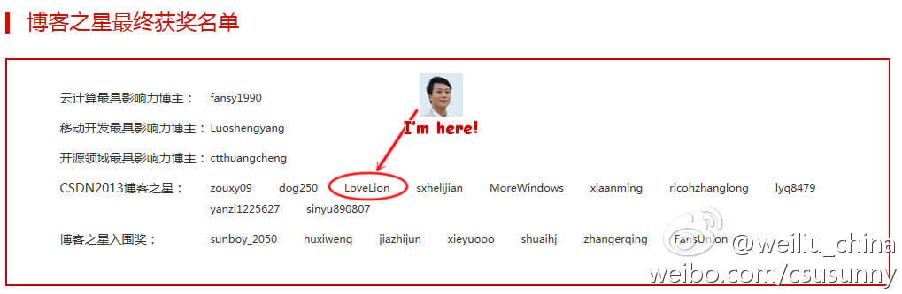
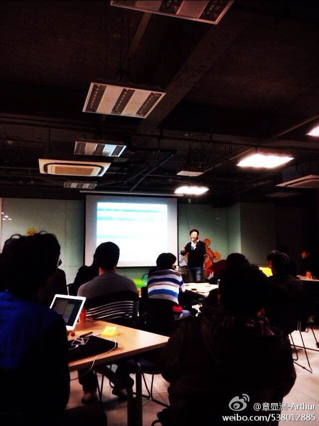

真是有过年的气氛了，连垃圾邮件都收得少了。

Ada李力
2014-01-22
Ada李力
2014-01-22
Challenge别人这个事情，只能对下，不能对上。- 尤其在东方文化中。
Ada李力
2014-01-22


- 
Ada李力
2014-01-22
top-down和bottom-up，这两种思路和工作方式，造成的结果容易是：上下对不上。
Ada李力
2014-01-22
这个自我管理制度，海尔的倒三角理论，和华为的让听见炮火的人指挥说法，都很一致。但到实际中。“在组织内做事仍然有界限”，这个界限在哪里才是最难把握的。[呵呵]
@育儿男人帮_毛豆爸爸:
SCRUM的实践误区（二） - “老板、总裁、管理” 这些高级头衔加持能够说明其有能力领导低级头衔吗？ 何为“自我管理” - 我用案例述说， 请狂戳链接 ...  网页链接
网页链接

Ada李力
2014-01-22
获奖名单公布网页链接 :云计算最具影响力博主：fansy1990 移动开发最具影响力博主：Luoshengyang 开源领域最具影响力博主：ctthuangcheng CSDN2013博客之星：zouxy09 dog250 LoveLion sxhelijian MoreWindows xiaanming ricohzhanglong lyq8479 yanzi1225627 sinyu890807
@Ada李力:
#CSDN2013年度博客之星评选#转发有奖,活动时间2013年12月06日—2014年1月17日，转发并@3位好友，推荐或自荐你心中最优秀的博主，就有机会获得CSDN精美礼品一份。赶快行动吧，动动手指就有机会获奖哦！活动地址：网页链接 网页链接
Ada李力
2014-01-22
以培训和成长机会勾引人才哈。 //@章显洲-Arthur: 《程序员》杂志2014年1月刊上有介绍支付宝架构演进的专题文章，由@_阿玺_ 撰写，另外还有整个阿里系双11支撑技术的其他文章。 @程序员杂志 @Ada李力 //@章显洲-Arthur: 有兴趣加入小微的同学可以发私信或邮件(agileway.cn@gmail.com) 给我
//@章显洲-Arthur: 《程序员》杂志2014年1月刊上有介绍支付宝架构演进的专题文章，由@_阿玺_ 撰写，另外还有整个阿里系双11支撑技术的其他文章。 @程序员杂志 @Ada李力 //@章显洲-Arthur: 有兴趣加入小微的同学可以发私信或邮件(agileway.cn@gmail.com) 给我
@ArthurPureZen:
前几天旁听了 @_阿玺_ 给“精武门”（阿里小微面向新入职的社招工程师的培训体系）同学讲授的《小微技术架构体系》课，真心精彩，循循善诱，层层剥笋，引人入胜。不由感慨，有志于技术的同学，如果能够在这么富有挑战的业务、这么庞大但又处处体现匠心的架构下工作，真是很好的成长机会啊。
- 